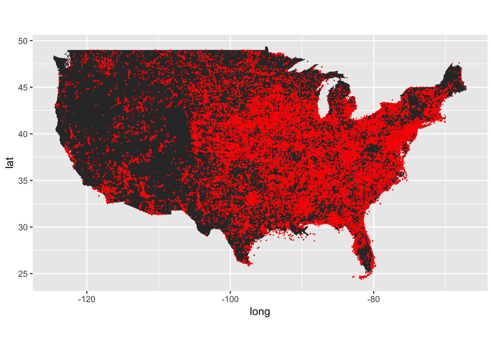
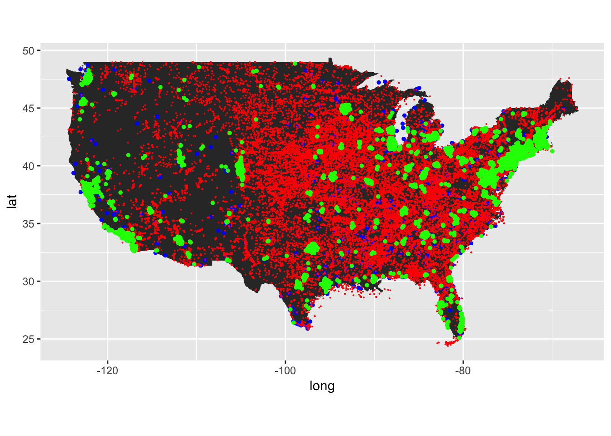
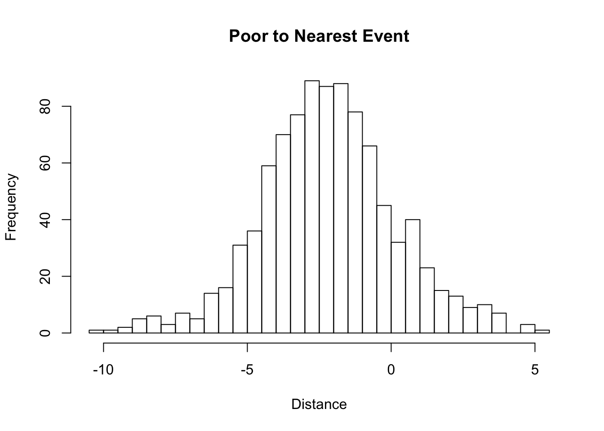
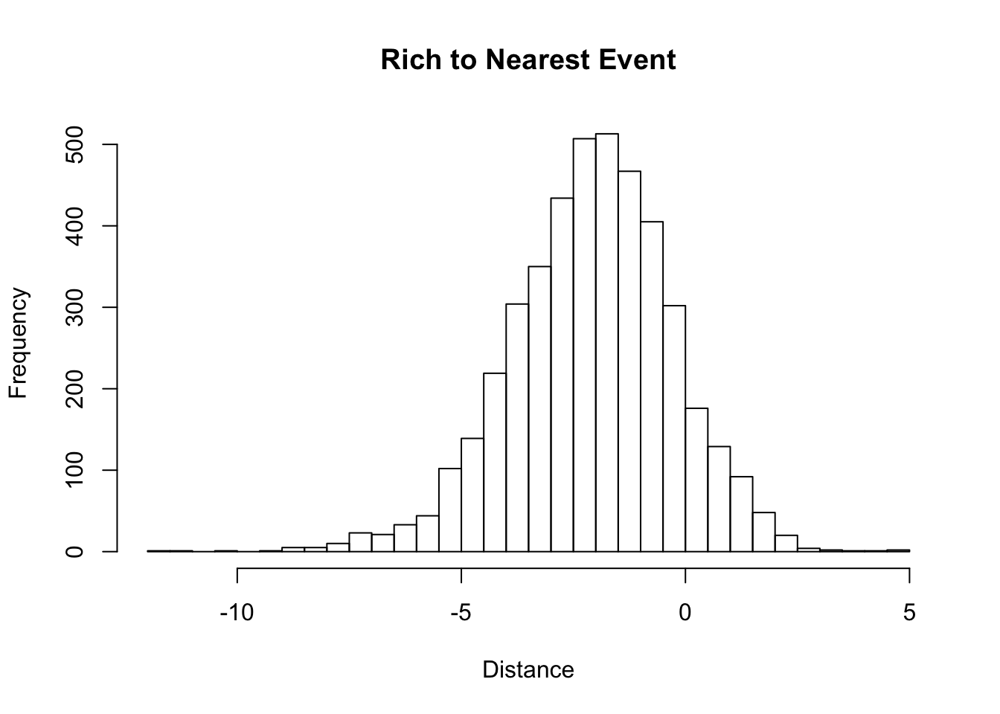

God Hates Rich People
July 23, 2018
A self-study on extreme weather events locations vs Low/High Income locations.
Introduction
Extreme weather events in the U.S. are regularly tracked by the National Oceanic and Atomspheric Administration (NOAA).
The NCDC Storm Events database is provided by the National Weather Service (NWS) and contain statistics on personal injuries and damage estimates. (ref. gov.noaa.ncdc:C00510).
The question is, are high-income or low-income households more susceptible to extreme weather events?
The US Household Income dataset provided by Golden Oak Research Group contains 32,000 records on US Household Income Statistics & Geo Locations. The dataset originally developed for real estate and business investment research. Income is a vital element when determining both quality and socioeconomic features of a given geographic location. (ref. Golden Oak Research Group, LLC. “U.S. Income Database Kaggle”. Publication: 5, August 2017.)
Preliminary Analysis
## Loading packages
library(ggplot2)
library(ggmap)
library(maps)
library(mapdata)
## Loading csv data.
strmEvents <- read.csv("StormEvents_locations-ftp_v1.0_d2014_c20180718.csv")
incomeKag <- read.csv("kaggle_income.csv")
# load U.S, map and plot extreme events.
usa <- map_data("usa")
gg1 <- ggplot() + geom_polygon(data = usa, aes(x=long, y = lat, group = group)) +
coord_fixed(1.3)
# I need to only get mainland U.S.
onlyUS <- subset(strmEvents, (LONGITUDE > -140 & LONGITUDE < -50 & LATITUDE < 50 & 20 < LATITUDE ))
# Coordinate data preperation for plotting.
corStrmEvents <- data.frame(lat = onlyUS$LATITUDE,
long = onlyUS$LONGITUDE,
names = onlyUS$EVENT_ID,
stringsAsFactors = FALSE)
# Plotting
gg1 +
geom_point(data = corStrmEvents,
aes(x = long, y = lat), color = "red", size = exp(-100))
As we can see extreme weather events span the entire mainland U.S. Majority of the events are held along the eastern seaboard.
We then superimpose the dataset of US income where blue is the poverty line ( < $25,000 USD) and green is the upper middle class ( $100,000 > ).
poorPeople <- subset(incomeKag, Lon > -140 & Mean < 25000 & Lat > 20 & Lat < 50)
corPoorPeople <- data.frame(lat = poorPeople$Lat,
long = poorPeople$Lon,
names= poorPeople$Place,
stringsAsFactors = FALSE)
richPeople <- subset(incomeKag, Lon > -140 & Mean > 100000 & Lat > 20 & Lat < 50)
corRichPeople <- data.frame(lat = richPeople$Lat,
long = richPeople$Lon,
names = richPeople$Place,
stringsAsFactors = FALSE)
gg2 = ggplot() + geom_polygon(data = usa, aes(x=long, y = lat, group = group)) +
coord_fixed(1.3) + geom_point(data = corPoorPeople,
aes(x = long, y = lat, group = "Poverty Class"), color = "blue", size = 1) +
geom_point(data = corStrmEvents,
aes(x = long, y = lat, group = "Extreme Weather Events"), color = "red", size = 0.0001) +
geom_point(data = corRichPeople,
aes(x = long, y = lat, group = "Upper Middle Class"),color = "green", size = 1)
gg2 
We can see that most of the green (rich) points are clustered around the major cities, while the blue (poor) points are fairly spread with some clumping.
Now we simply do a calculation of the minimum distance between every green point to red point, and then every blue point to red point. (ie, find the closest weather event to each income datapoint.)
To do this, I create a function called calcDistance which takes in a person, and a weather list object that has both longitude and latitude.
# Calculate the distance for each poor person and rich person
# to the nearest extreme weather event.
calcDistance <- function(person,weather) {
xE = weather$long
yE = weather$lat
xS = person$long
yS = person$lat
# Pythogram Theorem. (I know the earth is a curved surface but
# the curvature should be negligable if the locations are sufficiently close)
return(distance = (xE - xS)^2 + (yE - yS)^2)
}
poorDistances <- c()
for (i in 1:length(corPoorPeople[,1])){
poorDistances <- append(poorDistances,min(calcDistance(corPoorPeople[i,],corStrmEvents)))
}
richDistances <- c()
for (i in 1:length(corRichPeople[,1])){
richDistances <- append(richDistances,min(calcDistance(corRichPeople[i,],corStrmEvents)))
}Now that we have the distance to the nearest weather point we simply do a summary of both the rich and the poor distances.
# Convert from latitude/longitutde to km for sanity.
summary(poorDistances*110.574) ## Min. 1st Qu. Median Mean 3rd Qu. Max.
## 0.00004 0.02676 0.11175 1.83479 0.47457 178.30054summary(richDistances*110.574)## Min. 1st Qu. Median Mean 3rd Qu. Max.
## 0.00001 0.04025 0.13215 0.56362 0.41050 111.15449Summary
We can see that the mean distance for rich people is signficiantly closer than the mean distance for poor people. That means on average, can we say that the rich neighborhoods are consistently closer to extreme weather events?
From the rough summary it does indeed.
After looking at histograms it seems that the distances are modeled by one of the heavy tailed solutions. Taking the logorithm allows for a better looking plot.
hist(log(poorDistances*110.574),
main="Poor to Nearest Event",
xlab = "Distance",
breaks = 40)
hist(log(richDistances*110.574),
main="Rich to Nearest Event",
xlab = "Distance",
breaks = 40)
My assumption is that this is the lognormal distribution.
Consider a random variable \(U\) having univariate log-normal distribution with parameters \(\sigma \in \mathbb{R}_{+}\) \(\mu \in \mathbb{R}\). Have \(u \in \mathbb{R}_+\), then the probability density function of random variable \(U\) is defined as \[\mathcal{LN}(u; \mu, \sigma) = \frac{1}{u\sigma\sqrt{2\pi}}\exp\left[-\frac{(\ln u - \mu)^2}{2\sigma^2} \right].\]
Now lets compute the log(distance) and check the summary.
summary(log(poorDistances*110.574))## Min. 1st Qu. Median Mean 3rd Qu. Max.
## -10.1652 -3.6210 -2.1915 -2.1708 -0.7454 5.1835summary(log(richDistances*110.574))## Min. 1st Qu. Median Mean 3rd Qu. Max.
## -11.5947 -3.2127 -2.0238 -2.0975 -0.8904 4.7109We see a mean of -2.0975 for rich, vs -2.1708 for poor.
With the log-normal assumption we can say that the rich people are actually farther away from the extreme events than poor people.
However, is this really the case?
Let’s compare the two mean’s together using the Student’s t-test.
#Students t-test
t.test(log(poorDistances*110.574),log(richDistances*110.574)) ##
## Welch Two Sample t-test
##
## data: log(poorDistances * 110.574) and log(richDistances * 110.574)
## t = -0.90295, df = 1189.6, p-value = 0.3667
## alternative hypothesis: true difference in means is not equal to 0
## 95 percent confidence interval:
## -0.23266887 0.08600527
## sample estimates:
## mean of x mean of y
## -2.170832 -2.097500Since our p-value is too large we cannot reject the null hypothesis.